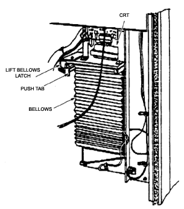

Operating Documentation
Direction 5112972-800, Rev# 2
CT Planned Maintenance Procedures
Operating Documentation |
| Required Persons | Preliminary Reqs | Procedure | Finalization |
|---|---|---|---|
| 1 | Timing Not Applicable | 10 mins | Timing Not Applicable |
Procedure Effectivity:
| Assembly: | MATRIX CAMERA |
| Subassembly: | |
| Purpose: | Clean the CRT |
| Last Revised: | July 1995 |
| Item | Qty | Effectivity | Part# | Manufacturer | |
|---|---|---|---|---|---|
| Glass Cleaner | - | - | - | ||
| Item | Qty | Effectivity | Part# | Manufacturer |
|---|---|---|---|---|
| Clean Cloth | - | - | - |
Clean the CRT face every six months. Use glass cleaner and a clean cloth. Perform the following steps to position the CRT and bellows assembly so that it is accessible:
To access the CRT, turn the power ON by pressing the power switch at the front of the camera. The message “SEL ST” (Select Station) will appear in the message window.
To access the CRT, press the STA switch. The console message window will display the current mode of the MI-10.
To access the CRT, press the LOCK switch to unlock the camera. The LOCK light will turn off.
To access the CRT, press the FMT (Format) switch to get a readout of the current format.
To access the CRT, press the + (plus) or - (minus) switch so that “FT CAL” appears in the message window.
To access the CRT, press the RST switch to reset the camera to the CAL format.
To access the CRT, when the stage finishes resetting, power the camera OFF and unplug the power cord from the rear panel of the camera. Open the rear door.
To access the CRT, lift the bellows slide latch and slide the bellows toward the front of the cabinet using the tab shown in Illustration 1.
Illustration 1: CRT Access for Cleaning

To access the CRT, dampen the cloth with glass cleaner and wipe the CRT until it is completely dry. Avoid streaking.
To access the CRT, slide the bellows closed until the bellows slide latch catches.
No finalization required.